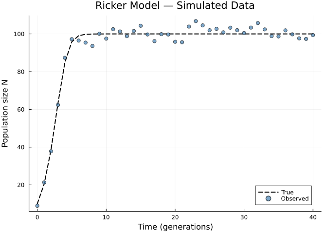
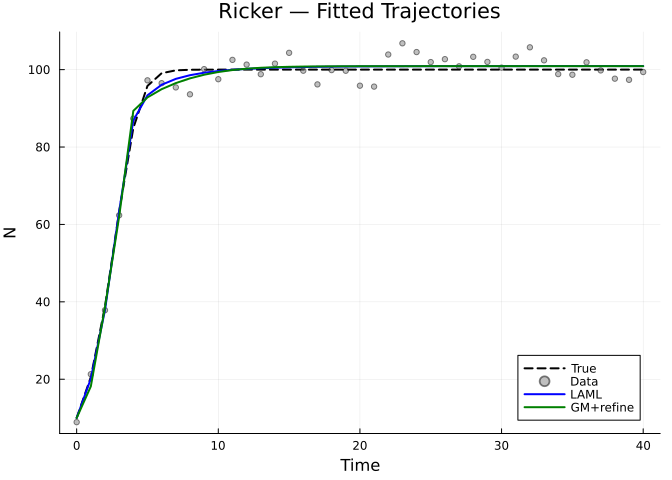
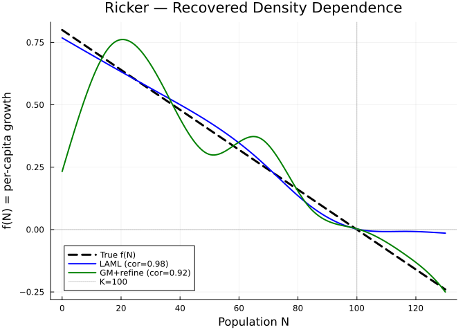
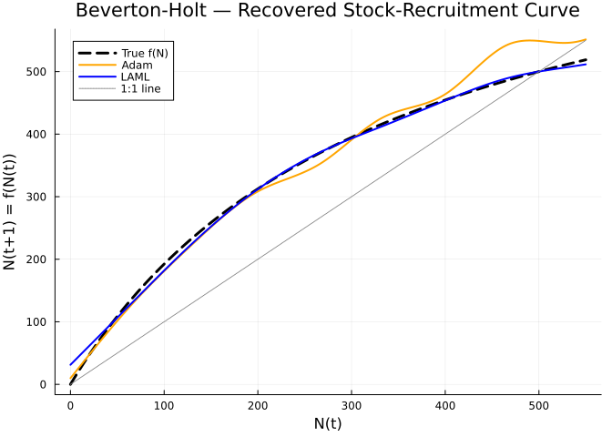
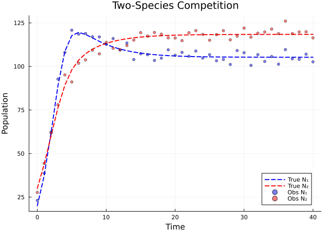
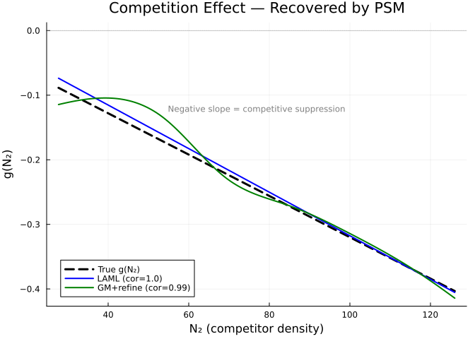
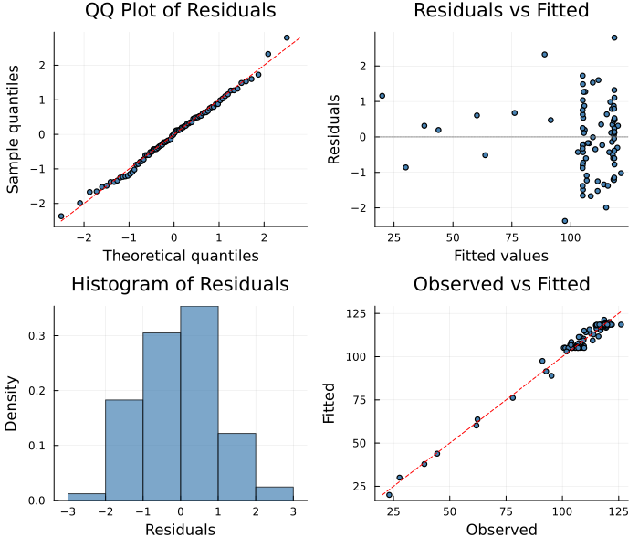

Discrete-Time Population Models
Overview
Many ecological models operate in discrete time, where populations are censused at regular intervals (e.g., annual surveys, breeding seasons). Classic examples include the Ricker model, Beverton-Holt, and matrix population models.
PartiallySpecifiedModels.jl supports discrete-time models by wrapping the dynamics in a SciML DiscreteProblem. The dynamics function has the same signature as ODE models:
f!(u_next, u, p, t)but instead of computing derivatives du/dt, it computes the next state u(t+1) directly. Passing a DiscreteProblem instead of an ODEProblem automatically selects discrete-time integration — no manual discrete=true flag needed.
Setup
using PartiallySpecifiedModels
using PartiallySpecifiedModels: solve
using Plots
using Statistics
using Random
Random.seed!(42)TaskLocalRNG()Example 1: Ricker Model with Unknown Density Dependence
The Ricker model describes density-dependent population growth:
\[N_{t+1} = N_t \exp\left(r\left(1 - \frac{N_t}{K}\right)\right)\]
We write this as $N_{t+1} = N_t \exp(f(N_t))$ where $f(N)$ is the unknown per-capita growth rate as a function of density.
Generate data
true_r = 0.8
true_K = 100.0
true_f(N) = true_r * (1.0 - N / true_K)
function ricker_true!(u_next, u, p, t)
N = u[1]
u_next[1] = N * exp(true_r * (1.0 - N / true_K))
end
N0 = [10.0]
tspan = (0.0, 40.0)
n_steps = Int(tspan[2])
times = collect(0.0:1.0:tspan[2])
N_true = zeros(length(times))
N_true[1] = N0[1]
u = copy(N0)
u_next = similar(u)
for i in 1:n_steps
ricker_true!(u_next, u, nothing, Float64(i-1))
u .= u_next
N_true[i+1] = u[1]
end
# Add observation noise
data = N_true .+ 3.0 .* randn(length(times))
data = max.(data, 0.1)
plot(times, N_true, label="True", lw=2, color=:black, ls=:dash,
xlabel="Time (generations)", ylabel="Population size N",
title="Ricker Model — Simulated Data")
scatter!(times, data, label="Observed", ms=4, color=:steelblue, alpha=0.7)
Fit with LAML
LAML — Data loss: 292.5, EDF: 4.2Fit with GradientMatching
For discrete models, gradient matching smooths the observed data and matches the smoothed next-state values $\hat{y}(t+1) = f(\hat{y}(t))$. The refine_iters option runs a short forward-simulation refinement to correct the function in regions where derivative matching alone is insufficient:
GradientMatching — Data loss: 301.4, EDF: 10.0Compare fitted trajectories
p1 = plot(times, N_true, label="True", lw=2, color=:black, ls=:dash,
xlabel="Time", ylabel="N", title="Ricker — Fitted Trajectories")
scatter!(times, data, label="Data", ms=3, color=:gray, alpha=0.5)
plot!(times, sol_laml.fitted_values[:, 1], label="LAML", lw=2, color=:blue)
plot!(times, sol_gm.fitted_values[:, 1], label="GM+refine", lw=2, color=:green)
p1
Recover the density-dependence function
N_grid = range(0.0, 130.0, length=200)
f_true = [true_f(N) for N in N_grid]
f_laml = [sol_laml.unknown_functions[:f](N) for N in N_grid]
f_gm = [sol_gm.unknown_functions[:f](N) for N in N_grid]
p2 = plot(N_grid, f_true, label="True f(N)", lw=3, color=:black, ls=:dash,
xlabel="Population N", ylabel="f(N) = per-capita growth",
title="Ricker — Recovered Density Dependence")
plot!(N_grid, f_laml, label="LAML (cor=$(round(cor(f_true, f_laml), digits=2)))", lw=2, color=:blue)
plot!(N_grid, f_gm, label="GM+refine (cor=$(round(cor(f_true, f_gm), digits=2)))", lw=2, color=:green)
hline!([0.0], color=:gray, ls=:dot, label="", alpha=0.5)
vline!([true_K], color=:gray, ls=:dot, label="K=$(Int(true_K))", alpha=0.5)
p2
The zero-crossing of $f(N)$ reveals the carrying capacity $K$ — where the density-dependent growth rate changes sign. LAML and GradientMatching (with shooting refinement) both recover the function accurately.
Example 2: Beverton-Holt Recruitment
The Beverton-Holt model describes compensatory density dependence:
\[N_{t+1} = \frac{rN_t}{1 + \frac{r-1}{K}N_t}\]
This is a monotonically increasing, saturating stock-recruitment curve. We model the entire map $N_{t+1} = f(N_t)$ as unknown.
true_r_bh = 2.5
true_K_bh = 500.0
bh_true(N) = true_r_bh * N / (1.0 + (true_r_bh - 1.0) / true_K_bh * N)
N0_bh = [30.0]
tspan_bh = (0.0, 25.0)
times_bh = collect(0.0:1.0:tspan_bh[2])
N_true_bh = zeros(length(times_bh))
N_true_bh[1] = N0_bh[1]
for i in 1:Int(tspan_bh[2])
N_true_bh[i+1] = bh_true(N_true_bh[i])
end
data_bh = N_true_bh .+ 8.0 .* randn(length(times_bh))
data_bh = max.(data_bh, 1.0)26-element Vector{Float64}:
25.570676073440772
79.10257006863648
142.65228154259793
247.93746503551966
361.5143614108307
423.8469299529876
465.7645156489092
497.2899676456883
503.1426303499205
500.6194978270763
⋮
499.5940329694254
515.177356624331
498.5969371285903
507.70546546997593
511.1776655122701
483.7462197821669
505.4359022736914
499.05704336380603
497.8926779692759Fit with AdamSolver
Adam — Data loss: 56970.0Fit with LAML
LAML — Data loss: 1235.0Compare stock-recruitment curves
N_grid_bh = range(0.0, 550.0, length=200)
f_true_bh = [bh_true(N) for N in N_grid_bh]
f_adam_bh = [sol_adam.unknown_functions[:f](N) for N in N_grid_bh]
f_laml_bh = [sol_bh_laml.unknown_functions[:f](N) for N in N_grid_bh]
plot(N_grid_bh, f_true_bh, label="True f(N)", lw=3, color=:black, ls=:dash,
xlabel="N(t)", ylabel="N(t+1) = f(N(t))",
title="Beverton-Holt — Recovered Stock-Recruitment Curve")
plot!(N_grid_bh, f_adam_bh, label="Adam", lw=2, color=:orange)
plot!(N_grid_bh, f_laml_bh, label="LAML", lw=2, color=:blue)
plot!(N_grid_bh, collect(N_grid_bh), label="1:1 line", lw=1, color=:gray, ls=:dot)
The intersection of the stock-recruitment curve with the 1:1 line gives the equilibrium population $K$.
Example 3: Two-Species Competition
Discrete-time Lotka-Volterra competition:
\[N_{1,t+1} = N_{1,t} \exp\left(r_1 \left(1 - \frac{N_{1,t} + \alpha_{12} N_{2,t}}{K_1}\right)\right)\]
\[N_{2,t+1} = N_{2,t} \exp\left(r_2 \left(1 - \frac{N_{2,t} + \alpha_{21} N_{1,t}}{K_2}\right)\right)\]
We treat the competition effect $g(N_2)$ on species 1 as unknown: $N_{1,t+1} = N_{1,t} \exp(r_1(1 - N_{1,t}/K_1) + g(N_{2,t}))$
where the true function is $g(N_2) = -r_1 \alpha_{12} N_2 / K_1$.
r1, K1, α12 = 0.8, 200.0, 0.8
r2, K2, α21 = 0.5, 150.0, 0.3
function competition_true!(u_next, u, p, t)
N1, N2 = u
u_next[1] = N1 * exp(r1 * (1.0 - (N1 + α12 * N2) / K1))
u_next[2] = N2 * exp(r2 * (1.0 - (N2 + α21 * N1) / K2))
end
u0_comp = [20.0, 30.0]
tspan_comp = (0.0, 40.0)
times_comp = collect(0.0:1.0:tspan_comp[2])
N_comp = zeros(length(times_comp), 2)
N_comp[1, :] .= u0_comp
u_c = copy(u0_comp)
u_cn = similar(u_c)
for i in 1:Int(tspan_comp[2])
competition_true!(u_cn, u_c, nothing, Float64(i-1))
u_c .= u_cn
N_comp[i+1, :] .= u_c
end
data_comp = N_comp .+ 3.0 .* randn(size(N_comp))
data_comp = max.(data_comp, 0.1)
p_data = plot(times_comp, N_comp[:, 1], label="True N₁", lw=2, color=:blue, ls=:dash,
xlabel="Time", ylabel="Population", title="Two-Species Competition")
plot!(times_comp, N_comp[:, 2], label="True N₂", lw=2, color=:red, ls=:dash)
scatter!(times_comp, data_comp[:, 1], label="Obs N₁", ms=3, color=:blue, alpha=0.5)
scatter!(times_comp, data_comp[:, 2], label="Obs N₂", ms=3, color=:red, alpha=0.5)
p_data
Fit with unknown competition function
Key modelling tip: Set the spline domain to match the observed data range of $N_2$, not the theoretical range. This avoids extrapolation artefacts at boundaries.
LAML — Data loss: 587.9, EDF: 2.0Compare with GradientMatching
GradientMatching — Data loss: 580.3, EDF: 8.0Recovered competition effect
N2_grid = range(N2_lo, N2_hi, length=200)
g_true = [-r1 * α12 * N2 / K1 for N2 in N2_grid]
g_laml = [sol_laml.unknown_functions[:g](N2) for N2 in N2_grid]
g_gm = [sol_gm.unknown_functions[:g](N2) for N2 in N2_grid]
p3 = plot(N2_grid, g_true, label="True g(N₂)", lw=3, color=:black, ls=:dash,
xlabel="N₂ (competitor density)", ylabel="g(N₂)",
title="Competition Effect — Recovered by PSM")
plot!(N2_grid, g_laml, label="LAML (cor=$(round(cor(g_true, g_laml), digits=2)))", lw=2, color=:blue)
plot!(N2_grid, g_gm, label="GM+refine (cor=$(round(cor(g_true, g_gm), digits=2)))", lw=2, color=:green)
hline!([0.0], color=:gray, ls=:dot, label="", alpha=0.5)
annotate!(mean(N2_grid), minimum(g_true)*0.3,
text("Negative slope = competitive suppression", 8, :gray))
p3
Both solvers recover the linear negative competition effect $g(N_2)$ within the observed data range. Unlike the Ricker model, the competition dynamics have a longer transient, giving both solvers more information across the domain of $N_2$. The slope reveals the competition coefficient $\alpha_{12}$ without assuming any parametric functional form.
Diagnostic Plots
A standard 4-panel diagnostic display assesses residual behaviour for the Ricker LAML fit. The QQ plot checks normality of standardized residuals, “Residuals vs Fitted” detects systematic patterns, the histogram visualises the residual distribution, and “Observed vs Fitted” checks overall calibration.
using PartiallySpecifiedModels: appraise
diag = appraise(sol_laml)
p_qq = scatter(diag.qq_theoretical, diag.qq_sample,
xlabel="Theoretical quantiles", ylabel="Sample quantiles",
title="QQ Plot of Residuals", ms=3, legend=false, color=:steelblue)
mn, mx = extrema(vcat(diag.qq_theoretical, diag.qq_sample))
plot!(p_qq, [mn, mx], [mn, mx], color=:red, ls=:dash, label="")
p_rf = scatter(diag.fitted, diag.residuals,
xlabel="Fitted values", ylabel="Residuals",
title="Residuals vs Fitted", ms=3, legend=false, color=:steelblue)
hline!(p_rf, [0], color=:gray, ls=:dot)
p_hist = histogram(diag.residuals, normalize=:pdf,
xlabel="Residuals", ylabel="Density",
title="Histogram of Residuals", legend=false, color=:steelblue, alpha=0.7)
p_of = scatter(diag.observed, diag.fitted,
xlabel="Observed", ylabel="Fitted",
title="Observed vs Fitted", ms=3, legend=false, color=:steelblue)
mn2, mx2 = extrema(vcat(diag.observed, diag.fitted))
plot!(p_of, [mn2, mx2], [mn2, mx2], color=:red, ls=:dash, label="")
plot(p_qq, p_rf, p_hist, p_of, layout=(2, 2), size=(700, 600))
Durbin-Watson: 2.61, 1.829Summary
| Feature | Continuous (ODE) | Discrete |
|---|---|---|
| Dynamics signature | f!(du, u, p, t) computes du/dt | f!(u_next, u, p, t) computes u(t+1) |
| Time stepping | Adaptive ODE solver | Explicit iteration |
| SciML problem type | ODEProblem(f!, u0, tspan) | DiscreteProblem(f!, u0, tspan) |
| Default solver | Tsit5() | nothing |
| Supported solvers | All 23 solvers | 15 of the 23 — see below |
Fifteen of the 23 exported solvers accept a DiscreteProblem-derived PSMProblem: LAML, GCVSolver, CollocationLAML, GradientMatching, AdaptiveGradientMatching (MAP mode only — see below), TwoStageSolver, BNGSolver, AdamSolver, MultipleShootingSolver, DerivativeFreeSolver, MCMCSolver, VariationalSolver, ABCSolver, EnsembleKalmanSolver and ProfileLikelihoodSolver.
Eight solvers reject a discrete problem up front, all through the same _validate_problem(...; require_continuous=true) guard: RodeoSolver, DaltonSolver, PseudoMarginalSolver, MagiSolver, IntegralMatchingSolver, ODINSolver, RKHSSolver and FGPGMSolver. These are the probabilistic-ODE and GP-gradient methods, which assume a continuous-time generative model — an integrated Brownian motion prior, a GP derivative operator, or a cumulative time integral — that a map does not have.
AdaptiveGradientMatching is discrete-capable only in its MAP mode (n_samples=0, the default). Setting n_samples > 0 selects the tempered population-MCMC path, which errors on a discrete problem.
Solver recommendations for discrete models
- LAML — Most robust for discrete-time. Forward simulation keeps states self-consistent; automatic smoothing via LAML handles regularisation.
- GradientMatching — Fast and effective with
refine_iters > 0. The shooting refinement corrects the function in regions poorly covered by derivative matching alone.
Key ecological applications
- Ricker model: density-dependent growth with overcompensation
- Beverton-Holt: compensatory stock-recruitment
- Leslie/Lefkovitch: age/stage-structured matrix models
- Competition models: multi-species discrete Lotka-Volterra
- IPM extensions: integral projection models with unknown vital rates